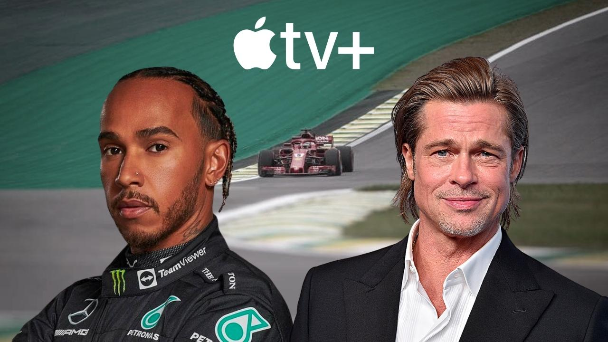

Brad Pitt irá estrelar filme sobre F1
 Fonte da Imagem: WEB
Fonte da Imagem: WEB
A AppleStudios confirmou filme sobre Fórmula 1, que terá como produtor-executivo o heptacampeão mundial da categoria Lewis Hamilton.

Fonte da Imagem: WEB
O filme será estrelado por Brad Pitt na direção de Joseph Kosinski, que vem de um grande sucesso, Top Gun: Maverick, o roteiro será por conta de Ehren Kruger, que também escreveu Top Gun: Maverick.
A Apple afirma que o longa será exibido nas telonas pelo menos por 30 dias e dependendo do sucesso pode chegar a 60 dias de exibição, antes de chegar em sua plataforma de streaming, a AppleTV+ afirma o site hollywoodreporter.com .